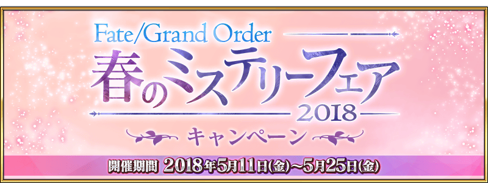
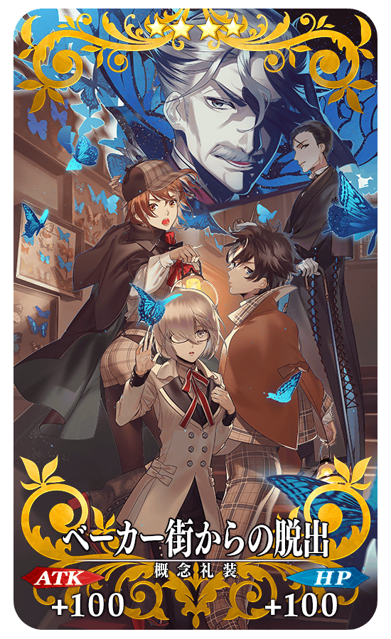
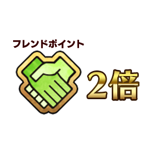
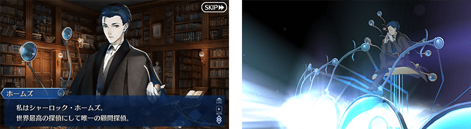

2018年5月11日(五) 17:00～5月25日(五) 11:59的期間，舉辦「Fate/Grand Order 春之神秘祭2018宣傳活動」。
◆舉辦期間◆
2018年5月11日(五) 17:00～5月25日(五) 11:59

通過選擇在管理室(ターミナル)畫面中「Fate/Grand Order 春之神秘祭2018」的活動看板所顯示的「謎特異點Ⅰ 逃離貝克街 舉辦記念關卡」，得到關卡限定的概念禮裝吧！
※請注意「謎特異點Ⅰ 逃離貝克街 舉辦記念關卡」並無冒險部份。
※通過「謎特異點Ⅰ 逃離貝克街 舉辦記念關卡」後才能進行期間限定活動「虛月館殺人事件」的主線關卡。
◆舉辦期間◆
2018年5月11日(五) 17:00～5月25日(五) 11:59
※做為期間限定活動「虛月館殺人事件」的結束時間5月18日(五) 11:59以後，未通過「謎特異點Ⅰ 逃離貝克街 舉辦記念關卡」的話，會在迦勒底之門內顯示關卡。
◆關卡開放條件◆
通過「特異點F 炎上汙染都市 冬木」的Master對象
◆「謎特異點Ⅰ 逃離貝克街 舉辦記念關卡」限定概念禮裝◆
|  |
★★★★SR |
|
下述的期間中，在關卡開始時的支援選擇畫面，選擇其他Master的對象Servant做支援情況、其他Master選擇自己的對象Servant做支援情況的友情點數獲得量變成2倍。 ◆舉辦期間◆ |
 |
◆對象Servant◆
| 職階 | 稀有度 | Servant名 |
|---|---|---|
| Saber | ★★★★★ | 莫德雷德 |
| ★★★★ | 阿爾托莉亞・潘德拉剛〔Lily〕 | |
| ★★★★ | 蘭斯洛特 | |
| ★★★ | 貝德維爾 | |
| Archer | ★★★★★ | 新宿的Archer |
| ★★★ | 尤瑞艾莉 | |
| ★★★ | 羅賓漢 | |
| Lancer | ★★★★ | 伊莉莎白・巴托里 |
| ★★★★ | 芬恩・麥克庫爾 | |
| ★★★ | 豹人 | |
| Rider | ★★★★ | 阿斯托爾福 |
| ★★★★ | 瑪莉・安東尼 | |
| Caster | ★★★★ | 海倫娜・布拉瓦茨基 |
| ★★★ | 梅菲斯托費勒斯 | |
| Assassin | ★★★★ | 新宿的Assassin |
| ★★★★ | 絲西娜 | |
| ★★★ | 亨利・傑基爾＆海德 | |
| Berserker | ★★★★★ | 源賴光 |
| ★ | 靠漫畫了解Berserker | |
| Ruler | ★★★★★ | 夏洛克・福爾摩斯 |
※請注意NPC Servant即使是對象Servant也在友情點數獲得量2倍的對象外。
下述的期間中，與「謎特異點Ⅰ 逃離貝克街」關連的Servant對象，幕間物語的AP消耗量變成1/2。
※請注意強化關卡、曜日關卡為對象外。
※在戰鬥中撤退的情況AP的消耗也是1/2。
◆舉辦期間◆
2018年5月11日(五) 17:00～5月25日(五) 11:59
◆對象Servant◆
| 職階 | 稀有度 | Servant名 |
|---|---|---|
| Saber | ★★★★★ | 莫德雷德 |
| ★★★★ | 阿爾托莉亞・潘德拉剛〔Lily〕 | |
| ★★★★ | 蘭斯洛特 | |
| ★★★ | 貝德維爾 | |
| Archer | ★★★ | 尤瑞艾莉 |
| ★★★ | 羅賓漢 | |
| Lancer | ★★★★ | 伊莉莎白・巴托里 |
| ★★★★ | 芬恩・麥克庫爾 | |
| ★★★ | 豹人 | |
| Rider | ★★★★ | 阿斯托爾福 |
| ★★★★ | 瑪莉・安東尼 | |
| Caster | ★★★★ | 海倫娜・布拉瓦茨基 |
| ★★★ | 梅菲斯托費勒斯 | |
| Assassin | ★★★★ | 絲西娜 |
| ★★★ | 亨利・傑基爾＆海德 | |
| Berserker | ★★★★★ | 源賴光 |
※關於幕間物語的AP消耗1/2，與2018年5月9日(三) 17:00～5月16日(三) 11:59期間舉辦的「幕間物語宣傳活動 第5彈」舉辦期間重疊，上述對象Servant為期間延長。
在達文西工房的「稀有稜鏡交換」追加夏洛克・福爾摩斯的體驗關卡。
◆夏洛克・福爾摩斯體驗關卡追加時間◆
2018年5月11日(五) 17:00～
|
◆關卡通過報酬◆ |
 |

| 追加道具 | 能交換 次數 |
必需的 稀有稜鏡數 |
|---|---|---|
| 夏洛克・福爾摩斯體驗關卡 | 1次 | 1個 |
※請注意曾通過夏洛克・福爾摩斯體驗關卡的話無法在達文西工房的「稀有稜鏡交換」交換。
關於期間限定活動「虛月館殺人事件」和「Fate/Grand Order 春之神秘祭2018」的詳情請至下述橫幅確認。